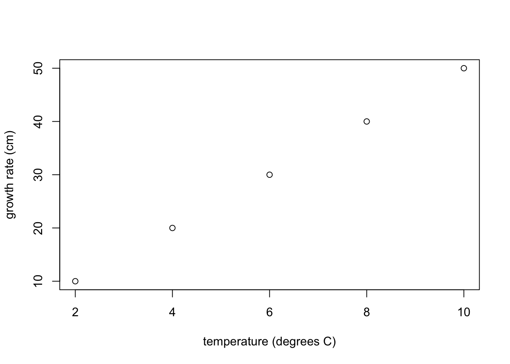

11 Statistics in R
This section demonstrates, and gives a brief description of, some functions to perform statistical analyses.
11.1 Comparing two means of a population or sample(s) using a t-test
Consider two hypotheses: the null hypothesis, \(H_0\), and the alternative hypothesis, \(H_1\). We are interested in testing if the mean of a sample x is equal to the mean of a population (or sample) y. The null hypothesis and alternative hypothesis are:
\(H_0: \mu_x = \mu_y\)
\(H_1: \mu_x \neq \mu_y\)
11.2 Types of tests
Depending on what you want to test, there are different names for different types of tests.
Two-sided tests (not equal to):
\(H_0: \mu_x = \mu_y\)
\(H_1: \mu_x \neq \mu_y\)
One-sided tests:
Lower-tailed test (less):
\(H_0: \mu_x \ge \mu_y\)
\(H_1: \mu_x < \mu_y\)
Upper-tailed tests (greater):
\(H_0: \mu_x \leq \mu_y\)
\(H_1: \mu_x > \mu_y\)
11.3 p-values and statistical significance
The p-value is a measure of the probability that an observed difference could have occurred just by random chance. The smaller the p-value is, the less likely the difference is due to chance.
The significance value, \(\alpha\) (alpha), will determine the threshold p-value for rejecting our null hypothesis when it is actually true. A significance level of \(\alpha=0.05\) is often used.
11.4 t.test
We use a t-test to compare two means. For example, suppose x is the change in weight of 10 domestic cats weighted one week apart. We will test if we can reject the null hypothesis that the mean of the sample, mean(x), is equal to 0 (the hypothesized mean value in the population of domestic cats). Our two hypothesis are:
\(H_0: \mu = 0\)
\(H_1: \mu \neq 0\)
Below, we generate some example data, x, to illustrate how to perform a t.test (when performing your analysis, this step is replaced with the step of loading or entering your data, i.e., see Chapter 8).
x <- rnorm(10)
x## [1] -0.90048211 1.40700257 1.04256554 0.80995338 -0.58485653 -0.56009405
## [7] -0.16075034 0.08685596 2.02048180 0.74644720Before running the analysis, we decide to set \(\alpha = 0.05\). Perform the test:
t.test(x)##
## One Sample t-test
##
## data: x
## t = 1.2838, df = 9, p-value = 0.2313
## alternative hypothesis: true mean is not equal to 0
## 95 percent confidence interval:
## -0.2977341 1.0791588
## sample estimates:
## mean of x
## 0.3907123Running this code, gives p-values greater than \(\alpha = 0.05\). Therefore, we fail to reject the null hypothesis that the weight change in the population of domestic cats is 0. As such, our data suggest that the cats have not changed weight.
The t.test function can be expanded by using additional arguments or changing arguments as required. For example, we can performed a one-sided test.
t.test(x, y = NULL,
alternative = c("two.sided", "less", "greater"),
mu = 0, paired = FALSE, var.equal = FALSE,
conf.level = 0.95, ...)
x(required) : data to be analized
y(optional) : data to be compared to. The default value is NULL
alternative (optional) : this refers to what you want to test: ("two.sided","less","greater").
By default this value will be "two.sided"
mu (optional) : indicates the true value of the mean. Default value = 0
paired (optional) :indicates whether you want a paired t-test. Default value = FALSE
var.equal (optional) : indicates if the variances are equal. Default value = FALSE
conf.level (optional) : confidence level of interval. Default value = 0.95
Questions
Suppose the 10 measures of change in cat weight were instead:
x2 <- rnorm(10)+1
x2## [1] 0.9082777 2.6132169 1.4769139 0.8076360 -0.7443536 1.4854035
## [7] 0.6655683 1.0470654 0.3420343 1.0051843Using the code above to generate the example data,
x2, perform a t-test with the null hypothesis that the change in weight of the cat population was 0.Perform a t-test with the null hypothesis that the cats in the sample,
x2have lost weight.Use the command
t.test(x,x2)to test if the mean of the samplexis equal to the mean of the samplex2.Suppose two samples are exactly the same. Would you expect to reject the null hypothesis? Try
t.test(x,x).
11.5 Correlation
Correlation, \(r\), is a statistical measure that describes if two variables are linearly related (meaning they change together at a constant rate). The correlation coefficient, \(r^2\), measures the proportion of the variance of one variable that can be explained by the straight-line dependence on the other variable.
- For positively-associated variables, an increase in one variable accompanies an increase in the other variable, and \(r > 0\):

cor(data$x,data$y)## [1] 1For the output above, the value 1 means \(r=1\), indicating a perfect positive correlation between two variables.
- For negatively-associated variables, an increase in one variable accompanies a decrease in the other variable, and \(r < 0\):

cor(data$x,data$y.1)## [1] -1For the output above, the value -1 means \(r=-1\), indicating a perfect negative correlation between two variables.
- When two variables are not correlated, \(r\) is near 0:

cor(data$x, data$y.3)## [1] 0.168460711.5.1 cor(x,y)
The correlation coefficient, \(r\), is calculated with the corr(x,y) function. The function has two mandatory arguments, x and y, which are lists of values of equal length:
x = c(1,4,5)
y = c(2,8,9)
cor(x, y)## [1] 0.9939441Questions
Can you write the code to graph
xandyfrom the code above to show the positive correlation? (see Chapter 10 if you need help)Can you change
yin the above code to yield negative correlation?